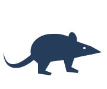

Human Chromatin Accessibility Atlas
Explore cell-type-resolved chromatin accessibility in the human genome, compare signal tracks and search ATAC-derived GeneScores.
Single-cell chromatin accessibility atlases for exploring cell identity and gene regulation.
Explore cell-type-resolved chromatin accessibility in the human genome, compare signal tracks and search ATAC-derived GeneScores.

A single-cell atlas of tree shrew organogenesis, mapping cell-type-specific candidate cis-regulatory elements across three developmental stages.